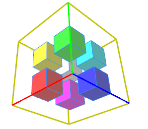

center operation
center(axes)
axes selector
| x, y, z, xy, xz, yz, xyz | Axes to include in center calculation. |
The center operation moves the scope of the current shape to the center of the previous shape's scope. 'Previous shape' means the previous shape on the shape stack.
Related
Examples
Positions of the axes selectors

Lot-->
primitiveCube
s(4,4,4)
t(-2,-2,-2)
SelCube
SelCube-->
[ color("#ff0000") s(1,1,1) center(x) X ]
[ color("#00ff00") s(1,1,1) center(y) X ]
[ color("#0000ff") s(1,1,1) center(z) X ]
[ color("#ffff00") s(1,1,1) center(xy) X ]
[ color("#ff00ff") s(1,1,1) center(xz) X ]
[ color("#00ffff") s(1,1,1) center(yz) X ]
[ color("#ffffff") s(1,1,1) center(xyz) X ]
The colored small cubes show the positions of the axis selectors relative to the previous shape's (SelCube) scope.